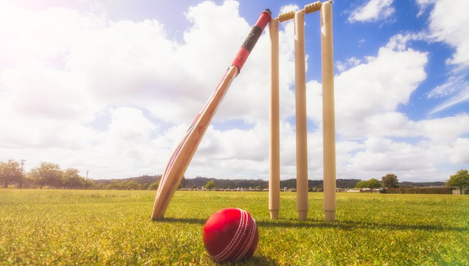
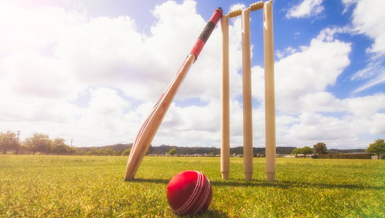

The sport of cricket has a known history beginning in the late 16th century England. It became an established sport in the country in the 18th century and developed globally in the 19th and 20th centuries. International matches have been played since the 19th-century and formal Test cricket matches are considered to date from 1877.

Cricket is the world's second most popular spectator sport, after association football (soccer). Internationally, cricket is governed by the International Cricket Council (ICC), which has over one hundred countries and territories in membership, although only twelve currently play Test cricket. The game's rules are defined in the "Laws of cricket". The game has various formats, ranging from T-10(Ten-10) played in around 90 minutes to Test matches, which can last up to five days.Origin Cricket was created during Saxon or Norman times by children living in the Weald, an area of dense woodlands and clearings in south-east England that lies across Kent and Sussex. The first definite written reference is from the end of the 16th century. There have been several speculations about the game's origins, including some that it was created in France or Flanders. The earliest of these speculative references is from 1300 and concerns the future King Edward II playing at "creag and other games" in both Westminster and Newenden. It has been suggested that "creag" was an Old English word for cricket, but expert opinion is that it was an early spelling of "craic", meaning "fun and games in general".
 

It is generally believed that cricket survived as a children's game for many generations before it was increasingly taken up by adults around the beginning of the 17th century. Possibly cricket was derived from bowls, assuming bowls is the older sport, by the intervention of a batsman trying to stop the ball from reaching its target by hitting it away. Playing on sheep-grazed land or in clearings, the original implements may have been a matted lump of sheep's wool (or even a stone or a small lump of wood) as the ball; a stick or a crook or another farm tool as the bat; and a stool or a tree stump or a gate (e.g., a wicket gate) as the wicket.